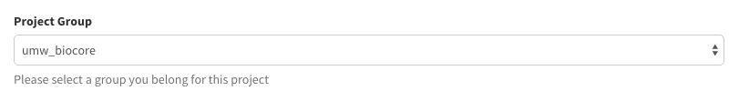
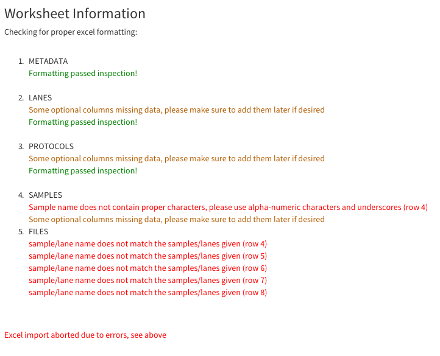
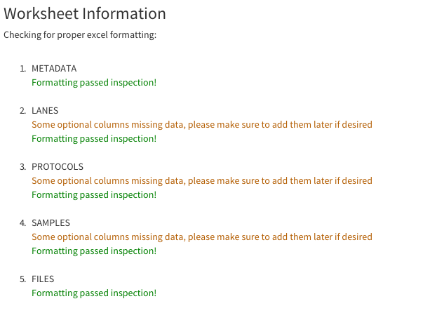

Excel Import Guide¶
This guide will walk you through the process of importing via the Excel Import page
Getting Started¶
First, make sure to have an instance of dolphin available (see Dolphin Docker) as well as an account for the dolphin interface.
Once logged in, click on the ‘NGS Tracking’ tab on the left, then click on ‘Excel Import’.

From here, under the ‘Excel file input’ button, there is a link to download an example excel input. Download the example spreadsheet and you’ll be ready to start adding your data.
You can also download the example spreadsheet here:
single input directory
multiple input directories
Understanding the Heirarchy¶
Before we continue, let us discuss the way that your sample information will be stored. Dolphin stores information into 3 specific teirs.
At the top we have the Experiment Series, which essentially stores all of the information pertaining to your series of experiments.
Branching out from the experiment series, you have your set of individual experiments, or in the case, Imports.
Imports will contain all of the samples of that specific experiment as well as any other additional information that would link to your samples.
The bottom teir, or samples, are the individual samples obtained with their specific information. This information will help you better understand what each tab of the excel file will contain as we move forward.
Filling Out the Excel File¶
The example spreadsheet already contains faux information to give users some context to the information they will be replacing.
Certain header cells within the spreadsheet are marked with a red arrow on the top right of the cell. Hovering over these cells with your mouse will give you more details on what each row or column that they demark should include.
The spreadsheet contains multiple tabs that will help you organize your information properly.
If using the single input directory spreadsheet, there will not be a ‘DIRS’ tab within the spreadsheet.
META-DATA:
The first tab of the spreadsheet is the Metadata tab. This tab will reference to specific information about the experiment series at hand.
This tab will ask for information on:
- title: The unique title of the Experiment Series (Required)
- summary: Summarization of the goals/objectives of the Experiment Series
- overall design: Detailed description of the Experiment Series
- organization: The organization behind the project
- lab: The lab within the organization
- contributor: First name, Initial, Last name. You may add additional contributors by creating more ‘contributor’ cells in the A column with the actual contributors in the B column.
- processed directory: Full path for the processed output directory. This path is where you want to keep all of the data generated. (Required)
- amazon bucket: Optional amazon bucket link
This is the only tab that will ask for information in a single column (column B). The rest of the tabs will ask for information in rows.
Additionally, if using the single input directory spreadsheet, the Metadata tab will include:
- input directory: Full path for the input directory. This path contains the fastq files you want to process. (Required)
Note that to add additional Imports/Samples to an already exsisting Experiment Series, the information about the experiment must be identical to that you are adding to. Processed directory, and amazon bucket does not have to be identical for each submission.
Please note that every field except contributor and amazon bucket are required fields
IMPORTS:
The Imports tab will contain information about lanes/imports of the samples being submitted.
There can be multiple imports within this tab, each one residing on it’s own row.
Information on imports include:
- Import Name: The name of the import/experiment being submitted. (Required)
- Sequencing id: The id from the sequencing facility.
- Sequencing facility: Location of where sequencing took place.
- Cost: The cost of the sequencing.
- Date submitted: Date of request for sequencing.
- Date received: Date of sequencing results.
- % PhiX requested: The requested amount of PhiX in lane.
- % PhiX in lane: Actual amount of PhiX in lane.
- # of Samples: Number of samples within import.
- Resequenced?: Was this import resequenced?
- Notes: Additional notes about this import.
Please note that import name is required for submission.
PROTOCOLS:
The Protocols tab will contain information about the specific protocols used within the submission.
There can be multiple protocols within this tab, each one residing on it’s own row.
Protocol information includes:
- protocol name: The name of the protocol. (Required)
- growth protocol: Protocols used to grow the organism/cells.
- extract protocol: Protocols used to extract/prepare the sequenced material.
- library construction protocol: Library contruction protocol.
- crosslinking method: The crosslinking method if any.
- fragmentation method: The fragmentation method if any.
- strand-specific: Is this protocol strand specific?
- library strategy: Sequencing techniques of this library.
Please note that protocol name is required for submission.
SAMPLES:
The Samples tab will contain information about the samples within the submission.
There can be multiple samples within this tab, each one residing on it’s own row.
Sample information includes:
- Sample name: The name of the sample. (Required)
- Import name: The name of the import in which the sample resides. This import must be present in the Imports tab. (Required)
- Protocol name: The name of the protocol in which the sample used. This protocol must be present in the Protocols tab. (Required)
- barcode: This samples barcode.
- title: Descriptive title for the sample.
- batch id: This samples batch id.
- source symbol: Symbol used for the Source. Symbol is a 4 character string.
- source: Brief description of cell line, biological material, or tissue.
- organism: List the organism from which this sample came from.
- biosample type: Type of biosample, ie. in vitro.
- molecule: Type of molecule extracted from the sample.
- description: Added information that pertains to other fields.
- instrument model: Sequencing instrument used.
- average insert size: Average paired-end insert size.
- read length: The length of the reads.
- Genotype: The genotype of the sample.
- Condition Symbol: Symbols representing the conditions from the condition column. Multiple condition symbols may be present if multiple conditions match the symbols and they are comma separated.
- Condition: Specific condition(s) pertaining to the sample. Multiple conditions may be present as long as they are comma separated.
- concentration: Concentration of Conditions.
- treatment manufacturer: Manufacturer of treatments.
- Donor: Name of sample donor, Typically in the D## format.
- Time: Time (in minutes) post treatment.
- Biological Replica: Biological replica number.
- Technical Replica: Technical Replica number.
- spikeins: Yes or No based on if spike-ins were introduced into the sample.
- 3’ Adapter sequence: 3’ Adapter sequence if present.
- Notebook reference: Reference notebook information.
- notes: Any other additional notes for the sample.
- characteristics: newtag: Biosource characteristic.
- characteristics: tag: Biosource characteristic.
Please note that Sample name must be present and the Import name and Protocol name must match one provided in their respected tabs.
DIRS:
Short for directories, this tab indicated all the of directories in which your fastq data are stored. If using the single input directory spreadsheet, this tab will not be present.
There can be multiple entries on this tab.
Directory information includes:
- Directory ID: A specified ID to associate to files within the file tab. (Required)
- Input directory: Location within the cluster/host machine where the fastq files for this submission are stored. (Required)
FILES:
The Files tab will hold the files associated with either imports or samples.
There can be multiple entries on this tab, as well as multiple entries per import or sample.
File information includes:
- Sample or Import Name (Enter same name for multiple files): The sample or import name. These names must be within there respected tabs. (Required)
- Directory ID: A specified ID to associate to directories within the dirs tab. (Required)
- file name(comma separated for paired ends): The file fastq file name. If paired end, list both files seperated by a comma. (Required)
Please note that these fields are all required, and that if using the single directory input spreadsheet the directory id will not be present.
Preparing for Submission of Your Excel Spreadsheet¶
Once you’ve filled out your spreadsheet with all of your desired information, make sure to double check everything is in order. If your file seems to be filled out properly, we’re ready to submit.
If you haven’t yet already, head back to the excel import page.
Excel file input:

Click on the ‘Choose File’ button to select your excel spreadsheet’s path and click open. Once your file has been selected, the file name should appear to the left of the button.
Project Group:
This section will select the group in which you would like to submit this project under. The drop down menu should contain all of the groups that you are a member of.
If you cannot select a group, contact your local administrator or ‘biocore@umassmed.edu’.
Who can see?:

This section will determine the security credentials of your submission. You will select from one of 3 choices:
- only me
- only my group
- everyone
Your selection will determine who can see the data you will be submitting.
Submission¶
Once you’ve followed these above steps, you’re ready to hit the submit button.
You will be redirected to the next page where a series of checks overlook your submitted excel spreadsheet to make sure the proper information for submission was submitted.
Each tab within the spreadsheet has its own section for checks, displaying green text if the tests pass.
Yellow text is displayed with helpful information about cells that you may want to fill out, but are completely optional or able to be editted at a later point in time.
If an error occurs from improper excel spreadsheet submission, red text describing the error will appear appear in the specified section.
Submission fails:
If your submission fails at least one of the checks in place, the data will not be submitted.
You can then edit your spreadsheet based on the error output text and resubmit the spreadsheet to try again.
Submission passes:
If your submission passes, each section will contain green text saying that the section passed inspection.
A brief explanation describing what is being inserted/updated within the database is shown, followed by a helpful message that reads:
“We are currently processing your samples to obtain read counts and additional information. You can check the status of these initial runs on your NGS Status page.”
As stated by this message, the samples submitted are now in the initial processing step in which read counts and other additional information is obtained from the samples in order to run further analyses.
You can check the status of this initial run in the ‘Run Status’ page which can be found under ‘NGS Tracking’ on the left menu bar.